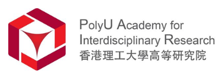

Invent Your Own Future
Open more paths for ambitious students.
IYOF connects students with programmes, people and practical experiences that help them understand industries, build confidence and take meaningful next steps.
 Invent Your Own Future
Invent Your Own Future
Rather than presenting IYOF mainly as a job board, the homepage leads with the organisation itself: the programmes it delivers, the communities it builds and the pathways it opens for students.

Students develop leadership, strengthen their networks and help shape opportunities for their peers.
Explore the initiative →
Bootcamps, competitions and panels turn career curiosity into hands-on learning.
Explore the initiative →
Selected workplace opportunities help students gain practical exposure and professional confidence.
Explore the initiative →
Mentorship, community events and future opportunities keep students connected after each programme.
Explore the initiative →For shareholders and partners, programme stories provide visible evidence of delivery: students build, analyse, present, collaborate and meet people working in the fields they are exploring.


Universities and institutions have helped IYOF bring specialist knowledge closer to students, while young people from schools across Hong Kong have joined our programmes and community.
Partner with IYOF →


School logos indicate past participant representation and do not imply formal endorsement unless separately stated.
IYOF’s advisors bring senior leadership across business, education, technology, public health and public service—helping the organisation make stronger decisions and build programmes with lasting value.
Meet the full board →
CEO & Executive Director, TOM Group
Strengthens IYOF’s direction with corporate leadership, investment and education-governance experience.

Director of Innovation Center, Chow Tai Fook Education Group
Advises IYOF on education innovation, research and technology-led programme development.

ICT expert, angel investor & Greater Bay Area research leader
Connects IYOF with innovation ecosystems, technology expertise and Greater Bay Area networks.

Former Deputy Director of Health & Controller for Food Safety
Strengthens programme governance through public-health, education and institutional-management experience.

Former Director, Hong Kong Fire Services Department
Contributes public-service leadership and operational-planning experience to IYOF’s resilience.
This remains a secondary preview. The homepage presents IYOF's mission and initiatives before individual postings.